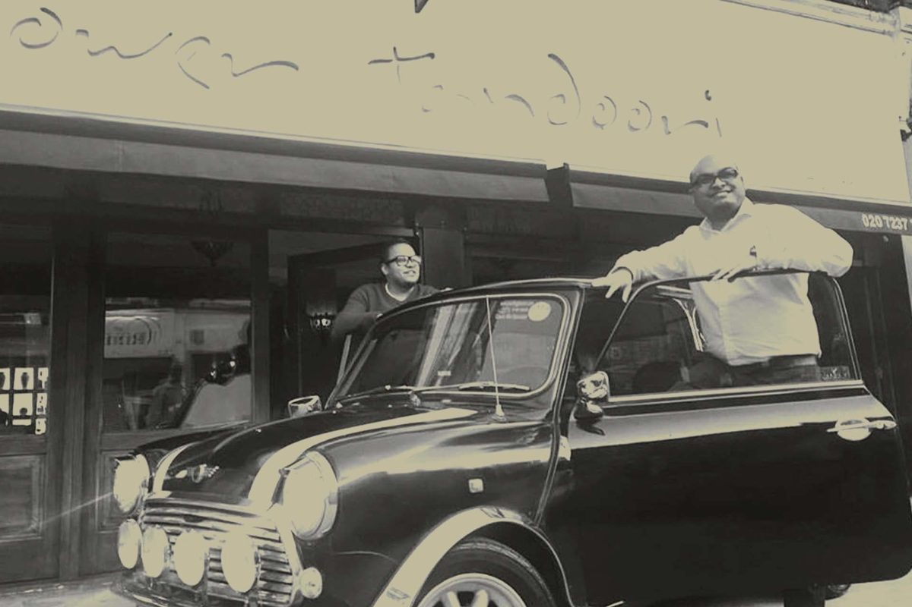
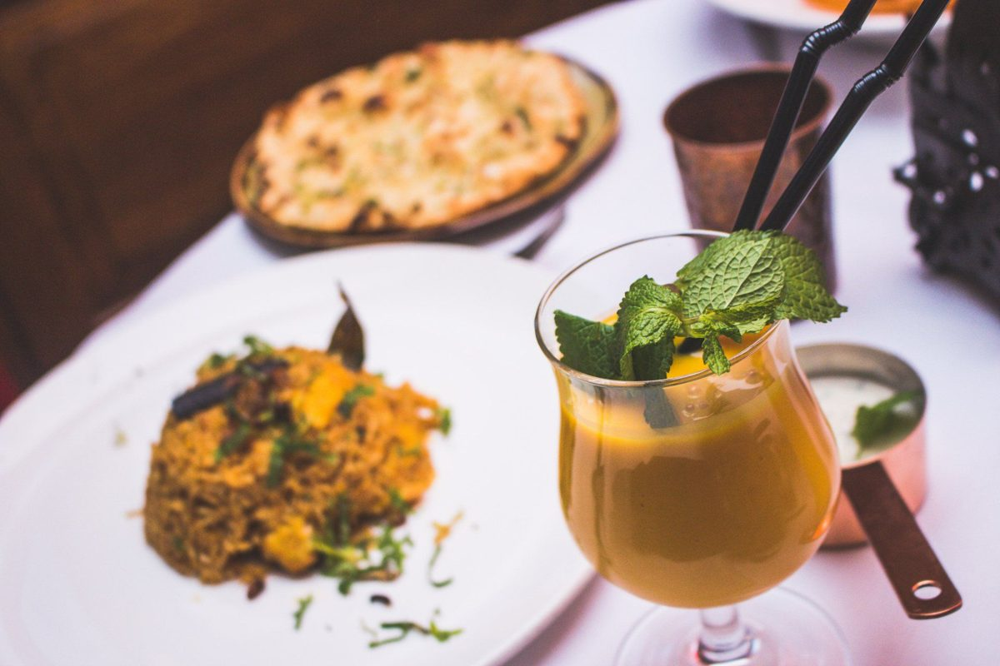
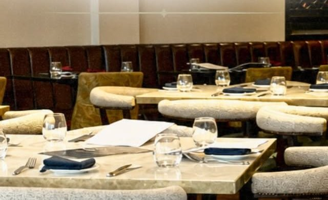
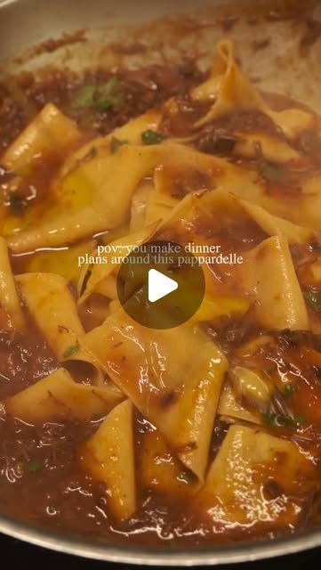
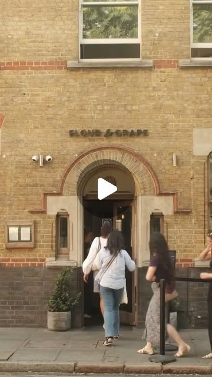

London's oldest tandoori restaurant. Your own videos should tell that story every week.
A London food creator made a reel about you and it drew 523 likes and 92 comments. Your own posts since July have drawn 5 to 23. The story is clearly there. We read your website, your Instagram, your Meta ads and two Bermondsey venues, and set them next to what has worked for the restaurants we film. This is what we found, the videos we would make, and our rates.
Forty-eight years of stories, and a feed that tells too few of them.
Tower Tandoori has more to film than almost any restaurant we look at: a charcoal tandoor in use since 1978, a third-generation family team, features in The Economist and the Financial Times, a TripAdvisor Travellers' Choice award, Bridge Bar's zero-proof Bond cocktails and a Sunday Banquet. You already run Meta ads and post regularly. What is missing is a steady flow of short video with people in it, so locals and visitors near Tower Bridge have a reason to book this week.
1,848
Instagram followers, from 783 posts
5 to 23
likes on your own posts since July
523
likes on one creator's reel about you
~250
ads in the Meta Ad Library from your page
What is already strong, and worth building on
A charcoal tandoor in use since 1978. The Economist featured you for keeping one of London's last traditional tandoors.
A family story people want to hear. The Financial Times wrote about you leading a third-generation family business.
Recognition you can point to: TripAdvisor Travellers' Choice, and a place on TripAdvisor's global list of top restaurants.
Bridge Bar's zero-proof cocktails, from the Nojito to a Zero Vesper, shaken not stirred. Made for the camera.
Open all day, 12pm to 11:30pm, seven days a week, on Tower Bridge Road.
You do not need a new menu or a new website. You need short video of the tandoor, the team and your guests, posted on a plan, so the people walking past Tower Bridge every day know you are there and why you are worth a booking.
02 · What has worked for places like yours
Real people, in the venue, doing something worth watching.
Nine videos we planned and filmed for restaurants we work with, each a different format: a skit, a dish moment, a trend, a challenge, a launch, a new dish, an offer, a hero product and a local call-out. Every one gives people a reason to watch and a reason to visit.
70M
views on one reel for New Greek in Newcastle
3.5M
views on one reel for Takdir in Whitley Bay
+40%
weekly sales for New Greek, in the owner's own words
Skit, 70M viewsNew Greek, Newcastle: "There's always the one impatient customer." A skit at the counter.Dish moment, 3.3M viewsNew Greek, Newcastle: "The ONLY way to eat a Greek salad." One dish, turned into something people argue about.Trend, 535K viewsTakdir, Whitley Bay: A trending format, filmed in the restaurant within days of it taking off.Challenge, 255K viewsNew Greek, Newcastle: "5 bites or less wins £20." A challenge people come in to try.Launch, 92K viewsNew Greek Bakery, Newcastle: "The Taste of Greece has landed in Newcastle." An opening, announced on video.New dish, 90K viewsTakdir, Whitley Bay: "Have you tried our Nachodoms?" A new dish, introduced by a person, not a menu photo.Offer, 67K viewsTakdir, Whitley Bay: "All for £20? Yes please." An offer shown on camera, not just posted as a graphic.Hero product, 60K viewsNew Greek Bakery, Newcastle: "The best sandwich in Newcastle?" One product, one question.Local call-out, 44K viewsThe Greek Spot, Middlesbrough: "Attention Middlesbrough gyros lovers." A video that speaks to one town.
A reason beats a nice shot. A curry on its own rarely travels. The same dish with a question, a challenge or a story does.
The venue is the set. Your tandoor, your dining room, Bridge Bar. We film in the place people will visit.
It is planned, not luck. We know which formats work before we arrive, and we pick the mix for your menu and your week.
View counts from our own client dashboard, checked 7 October 2026. Sales figure from the New Greek owner's own review.
03 · Your website
A rich website, with a few things working against it.
The site has every menu, booking, venue hire, Bridge Bar, your press and a busy blog. These are the changes we would make so it works harder for the video.
What we saw
Why it matters
Fix
February events are still on the homepage
The homepage still lists the Pongal Supper Club, Valentine's Weekend and the Season of Love sharing menu, which ran through February.
Swap them for what is on this month, and refresh it every few weeks.
Many food photos are stock images
A lot of the food photos on the site come from stock libraries, going by their Pexels and Unsplash file names. Other restaurants can use the same pictures.
Replace them with stills of your own dishes, tandoor and team from our filming days.
The Meta pixel is in place
Good news. Your site has a Meta pixel, Google Tag Manager and Google Analytics.
Use it: everyone who watches your videos or views your menu can be shown your next one.
No TikTok
We found links to Instagram and Facebook only.
Post the same short videos to TikTok, so every film reaches a second audience.



Photos from your own website and Instagram. Your room, your food and your shopfront are exactly what we would film.
04 · Your social channels
Your best post this year was made by somebody else.
1,848
Instagram followers
523
likes and 92 comments on @welshclarebit's reel about you
23
likes on your Mughlai Lamb Shank reel, your best own post since July
5
likes on your summer menu and Coconut Lime Soda posts
Tower Tandoori posts regularly, and the Meta ads are clearly planned. The pattern in your recent posts:
A real person beats a graphic. A creator's reel calling you London's oldest tandoori restaurant drew 523 likes and 92 comments. Your own posts drew 5 to 23.
Your ads already use the right formats. POV videos of the chef with flames, the naan pull and the tandoor itself. Those same formats, posted every week on your own feed, are what grow it.
Your best story is underused. Forty-eight years, three generations and one of London's last charcoal tandoors. That is a series, not a single post.
What this means. People respond when a real person tells your story in the room. Short video of that, made every month and posted on a plan, is how it reaches people who have never heard of you.
Source: instagram.com/tower_tandoori public profile and posts, and the Meta Ad Library (United Kingdom), checked 7 October 2026.
05 · Two Bermondsey venues
Who is winning attention near Tower Bridge, and how.
We looked at two independent venues a short walk from you: a Bermondsey Street restaurant doing very well on Instagram, and the nearest Indian restaurant we could confirm. Our Ad Library searches for Indian restaurants in Bermondsey and around Tower Bridge found no other advertisers. Checked on 7 October 2026.
Venue
Instagram
Meta ads
What gets attention
Best recent post
Tower Tandoori Tower Bridge Road
1,848
About 250 in the library
Creator reels, the tandoor, dishes
23 likes own post, 523 on a creator reel
Flour & Grape Bermondsey Street
121K
2 in the library, none live
Pasta made on camera, a weekly series
252 likes, a pappardelle POV
Shad Indian Tooley Street
156
Could not confirm
Menu captions, posted weekly
1 like
What the numbers say
Flour & Grape has 121K followers, a short walk away. Their recent posts are short videos of food being made by hand, plus a series called Behind the Pasta Window.
They barely advertise. Two ads in the library. Their reach comes from video people want to watch.
The nearest Indian restaurant is not competing on video at all. That leaves the space open for the tandoor that has been there since 1978.
Sources: public Instagram profiles and the Meta Ad Library (UK), 7 October 2026.
06 · What is working in your market
What is already working, in your account and on your doorstep.
Two pieces of your own content and two from Bermondsey Street. The common thread is a person, a process and a reason to come.
A creator, in your room@welshclarebit: "Oldest tandoori restaurant in London." 523 likes and 92 comments, your best post this year.Your ad, done rightYour Meta ad: POV, a chef and a wall of flame. This is the format to post every week.

One dish, one lineFlour & Grape: "POV: you make dinner plans around this pappardelle." 252 likes.

A series people followFlour & Grape: Behind the Pasta Window, episode two. 211 likes.
1
The tandoor is the star
Charcoal, fire, naan on the wall of the oven. Nobody else near Tower Bridge has it.
2
People on screen
Your family, your chefs and your regulars, with permission. Skits and challenges, filmed in the room.
3
A reason to come this week
Sunday Banquet, a Bridge Bar cocktail, a new dish. Every video ends with one.
07 · Twelve videos we would make
Built from your tandoor, your family and your guests.
Every concept uses something you already have. Six are built to bring people in this week. Six are built to keep your Instagram growing.
Videos that bring people in
6 concepts
Skit
You cannot rush charcoal
"When the new chef asks if the tandoor is ready yet."
A young chef keeps checking. The older hand just points at the coals. Built on a line from your own website.
Why: turns your oldest rule into a joke people share.
Challenge
Guess the year
"What year do you think this tandoor was first lit?"
Guests at the table guess. The answer, 1978, lands with the naan.
Why: challenges are among the formats that travel furthest for our restaurants.
Skit
Shaken, not stirred
"The name is Vesper. Zero Vesper."
A Bond-style moment at Bridge Bar, ending on the cocktail.
Why: makes your zero-proof menu feel fun, not like a compromise.
Challenge
The spice ladder
"Our team, one step hotter each round."
Staff try the menu from mild to hottest. Honest faces only.
Why: people tag the friend who would win.
Local
Tourist or local?
"What did you order? Where are you from?"
Quick answers from guests on the way out, from SE1 and much further afield.
Why: shows the room is loved by neighbours and visitors alike.
News
Travellers' Choice, filmed
"We found out we won. This is the team."
The family and the team reacting, then the room at full service.
Why: turns an award into a reason to book.
Organic that builds the audience
6 concepts
Series
Lighting the tandoor
"Every day since 1978, it starts like this."
The charcoal going in, the fire building, the first naan.
Why: a weekly series people look for.
Family
Three generations
"Three generations. One tandoor."
The family story in 30 seconds, told in the room.
Why: people book restaurants with a story they know.
Dish
The Mughlai Lamb Shank
"A true Tower Tandoori favourite."
Slow cooked, served, the first spoonful.
Why: your best own post, made into a proper film.
Sunday
The Sunday Banquet
"This is what a Sunday table looks like here."
A family table filling up, dish after dish.
Why: shows a whole Sunday in one clip.
Creators
A London creator a month
"We asked a food creator to order for us."
One invited creator, filmed by us as well, posted on both accounts.
Why: your best post this year came from exactly this.
Venue hire
Your event here
"Fashion shows, TV shoots, and your birthday."
Past events and a booked party, with permission.
Why: brings in venue hire and corporate dining enquiries.
08 · The plan, month by month
A plan built around the stories you already have.
Week 1
Plan and set up
A call to pick the first twelve videos, update the homepage events and set up video audiences on your Meta pixel.
Week 2
First filming day
The tandoor being lit, a full dinner service and Bridge Bar, filmed in one day.
Weeks 2 to 4
Posting on a plan
Videos go out on set days on Instagram and TikTok, each ending with a reason to book this week.
Month 2
More of what works
We look at what brought people in, film more of it, and plan the Christmas and festive menus.
Month 3
Review together
We report what the videos reached, what they brought in and what to do next.
Every month you get: filming in your restaurant, edited short videos, posting on a plan, and a simple monthly report. You keep every video.
09 · Our rates
Two ways to work with us.
Both include filming in your venue, editing, posting and managing your Instagram and TikTok. Three month minimum, then rolling.
Core
£899
a month, 10 to 12 videos
One filming day a month in your venue
10 to 12 edited short videos
Posting and captions on Instagram and TikTok
A monthly report
Growth
£1,250
a month, 20 to 25 videos
Two filming days a month
20 to 25 edited short videos
Posting, captions and community replies
A monthly report and planning call
Want ads as well? You already run Meta ads. Once the new videos are working, we can run your ads with them, aimed at people near Tower Bridge and London Bridge. That is a separate service, and we would only suggest it when the content is ready.
10 · Who we are, and next steps
A Newcastle team that films, edits and posts for restaurants.
We come to you, film in your venue, edit in house and post on a plan. We measure what matters to a restaurant: covers, bookings and repeat customers, not likes.
+40%
weekly sales for a Newcastle restaurant, in the owner's own words
87M+
views on content we have made for that one restaurant
70M
views on a single reel, planned and filmed in the venue
Jay Williams and Anya Davey, the founders of Fusion Creative. We film and run ads for restaurants, from our base in Newcastle. We would plan each filming day around your busiest service, and we would be the people you call about the plan. Our team of editors turns every filming day into finished videos, and either of us can be on camera when a video needs a presenter.
Next steps
A 20 minute call to pick the first videos.
Then the first filming day, built around the tandoor and a full dinner service.


Your best post this year was made by somebody else.
Tower Tandoori posts regularly, and the Meta ads are clearly planned. The pattern in your recent posts:
What this means. People respond when a real person tells your story in the room. Short video of that, made every month and posted on a plan, is how it reaches people who have never heard of you.
Source: instagram.com/tower_tandoori public profile and posts, and the Meta Ad Library (United Kingdom), checked 7 October 2026.